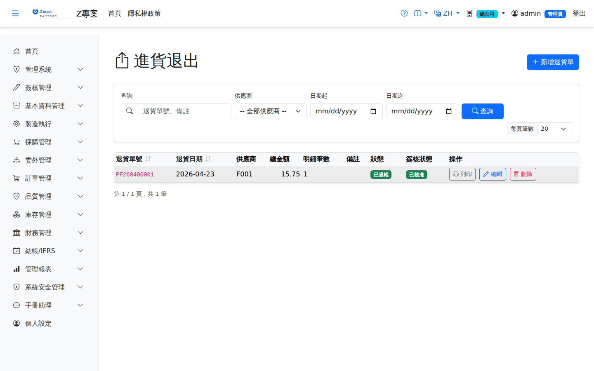

進貨退出Goods Return
路由：/GoodsReturn | 採購退貨（含 NCR 退貨處置來源）Route: /GoodsReturn | Purchase returns (including those raised by an NCR disposition)
將已入庫的進貨退回供應商。可由 IQC 不合格的 NCR 處置（Return）自動產生退貨草稿單，帶入原進貨單、供應商與估價，由採購確認後過帳出庫，並沖減應付。Returns received goods to the supplier. An NCR disposition of "Return" after a failed IQC creates the draft return automatically, carrying the original receipt, supplier and valuation; purchasing confirms it, stock is issued out and the AP is reduced.

採購退貨畫面截圖（示意，實際欄位/資料依權限與查詢條件而異）Purchase return screenshot (illustrative; actual fields and data vary by permission and query criteria)
查詢Search
1
查詢列輸入條件後點「查詢」；欄位標題可點擊排序，清單下方有分頁導航。Enter your criteria on the query bar and click "Search"; column headers can be clicked to sort, and the paging controls sit below the list.
單據狀態Status
| 狀態Status | 說明Guide |
|---|---|
| 草稿 DraftDraft | 已建立未生效，可自由編輯、刪除；需簽核者於此狀態送審。Created but not yet effective; can be freely edited or deleted, and submitted for approval from this status. |
| 待審核Pending approval | 已送審等待簽核，不可編輯；可撤回改回草稿。Submitted and waiting for approval; it cannot be edited, but it can be withdrawn back to draft. |
| 已確認 ConfirmedConfirmed | 簽核核准（或免簽核直接確認）後生效，等待後續作業/過帳。Effective once approved (or confirmed directly when no approval is required), waiting for the next step or for posting. |
| 已過帳 PostedPosted | 庫存/帳務已入帳，單據不可再修改。Stock and accounting have been posted; the document can no longer be changed. |
| 已作廢 VoidVoid | 反向沖銷已過帳內容；作廢原因需留存，不可復原。Reverses what was posted; the void reason is kept and the action cannot be undone. |
作業流程Process
建立退貨單Creating a return
1
點「新增」開啟側欄，填寫退貨單表頭與明細行後儲存（草稿）。Click "Add" to open the panel, fill in the return header and lines, then save (as a draft).
2
點「送審」進入簽核流程；核准後單據自動轉「已確認」。若免簽核，直接點「確認」。Click "Submit" to start the approval flow; the document turns to "Confirmed" once approved. Where no approval is required, click "Confirm" directly.
後續作業Follow-up actions
1
已確認/已過帳單據可點「列印」產生含 QR Code 的正式表單（新分頁開啟）。Confirmed and posted documents can be printed with "Print", producing the official form with a QR code in a new tab.
2
已過帳單據如需沖銷，點「作廢」並填寫原因；系統產生反向庫存/帳務異動。To reverse a posted document, click "Void" and enter a reason; the system creates the reversing stock and accounting entries.
進貨退出過帳時已回沖應付（未付款發票直接改小、已付款開折讓單），作廢退出不會把這筆補回去，因此：有未作廢的折讓單要先作廢；來源進貨的應付發票還沒作廢時不允許作廢退出——系統刻意不自動補回應付，更正一律由人開單處理：退錯了就另開一張進貨單把貨收回來，會認列新的應付；退出不會釋放採購單的已收量，採購單若已收滿，新進貨單不要掛原採購單。Posting a purchase return already reduced the payable (an unpaid invoice is reduced directly; a paid one gets a debit note), and voiding the return does not add it back. So void any debit note first, and while the source receipt's AP invoice is still active the return cannot be voided — the system deliberately never adds the payable back on its own, so corrections are always made with a document: if the return was a mistake, create a new goods receipt to bring the goods back, which recognizes a new payable; a return does not free up the purchase order's received quantity, so if the order is fully received, do not link the new receipt to it.
進貨退出時，存貨照現值（目前均價）出庫，而「進貨暫估應付」照原進貨單的單價沖回，所以退完後暫估應付不會留餘額。兩者的差額記入「進貨退出價差」（5152）：均價高於原進價記借方、低於原進價記貸方。When goods are returned to the supplier, stock leaves at its current cost (the moving average), while the goods-received-not-invoiced accrual is reversed at the original receipt price, so no balance is left on the accrual. The difference is booked to purchase return price variance (5152): a debit when the average is above the original price, a credit when it is below.
欄位說明Field reference
表頭Header
| 欄位Field | 說明Guide |
|---|---|
| 採購退貨單號Purchase return number | 系統採番，不可修改Numbered by the system; not editable |
| 退貨日期Return Date | 必填Required 退回供應商的日期；決定庫存回沖與沖銷應付的期間Date the goods were returned to the supplier; it determines the period of the stock reversal and the AP reversal |
| 供應商Supplier | 必填Required 退貨對象Return recipient |
| 備註Notes | 整張退貨單的補充說明Notes for the whole return document |
明細Lines
| 欄位Field | 說明Guide |
|---|---|
| 序號Seq | 明細行序Line seq |
| 進貨參考Receipt Ref | 該行對應的進貨單與行號，用於追溯原始單價與批號Goods receipt and line this row belongs to, used to trace the original price and lot |
| 品號Item | 必填Required 退回的料件Item returned |
| 退貨數量 / 單位Return Qty / UOM | 必填Required 本次退回數量；不可大於該進貨行的待處理數量。選了品號後，單位只列該品號可用的單位（庫存單位與查得到換算的單位，預設採購單位）。Quantity returned this time; it cannot exceed the open quantity of the receipt line. Once a product is chosen, the unit list shows only the units usable for it (its stock unit and units that convert to it; purchase unit preselected). |
| 幣別Currency | 該行的交易幣別；本幣金額依單據匯率換算而得Transaction currency of the line; the local amount is converted with the document rate |
| 單價Unit Price | 交易幣別的未稅單價，小數位數依幣別設定Price before tax in the transaction currency; decimal places follow the currency setting |
| 稅別Tax | 稅別代碼，決定稅率；改稅別會重算稅額Tax code, which determines the rate; changing it recalculates the tax |
| 未稅金額Line Amt | 數量 × 單價Quantity × unit price |
| 稅額Tax | 未稅金額 × 稅率Amount before tax × tax rate |
| 含稅總額Total | 未稅金額 ＋ 稅額，仍為Amount before tax + tax, still in 交易幣別Currency |
| 本幣金額Local Amount | 含稅總額換算為本位幣的金額（本幣＝外幣 × 匯率）；表頭合計與帳務入帳一律採本幣The tax-inclusive total converted to local currency (local = foreign × rate); header totals and accounting entries always use local currency |
IQC 判退並由 NCR 處置為「退貨」時，會自動建立本單草稿並回溯關聯原進貨單。When IQC rejects material and the NCR disposition is "Return", a draft return document is created automatically and linked back to the original goods receipt.
相關畫面Related screens
進貨單Goods Receipt、不合格品單（NCR）Non-Conformance Reports
注意：Note:NCR 產生的退貨草稿與原 NCR 雙向連結，可互相追溯。 Return drafts created from an NCR are linked to that NCR in both directions.